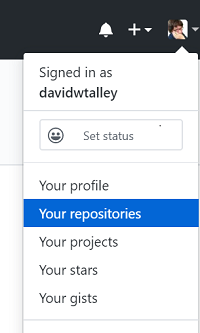
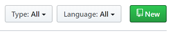

Work With GitHub
Our class uses GitHub as a repository for our html files, then we use its GitHub Pages function to display the work as public webpages. This involves a few steps you'll need to take:
- Create a repository and enable it for GitHub Pages display.
- Draft your html (and eventually CSS) in VS Code, then submit it to your GitHub repo.
- View your GitHub content in the browser.
Create a Repo
If you already have a personal repository you will use, skip this step.
- Login to your GitHub account.
- Click your profile icon at the upper right and select Your Repositories. 
- Click the New CTA (call-to-action, also known as a "button") to create a new repository. 
- Enter a name for your repository — all lower-case, no spaces!
- Click the Create Repository CTA.
Enable GitHub Pages Display
- Open your repo, as in step 2 above, then select the Settings tab.
- Scroll down to the GitHub Pages heading, then confirm that your master branch is selected as the site Data Source. If not, follow instructions here to make that selection now.
- Copy the GitHub Pages address above the data source selector to a browser window (the browser will show a 404 error at this point) and bookmark it. This will be the start of any of your GitHub Pages display.
- Close Settings, then select the create new page/file link or CTA.
- Enter this filename for your new page:
index.html, then enter some text for you page, something like "This will be the base index.html page." - Scroll down and select the Commit changes CTA.
- Edit the URL in your browser window address bar to add
/index.htmland press Enter.
Your URL should be formed like this:https://[your-GitHub-user-id].github.io/[your-repo-id]/index.html - Admire your first published web page!
Create Files and Submit to GitHub
- Open VS Code and add the code for your new .html page and save it on your local machine.
- Login to your GitHub account and open your personal repository.
- Navigate to the GitHub folder where you want to place your .html file.
- Select the Upload files CTA.
- Drag and drop from your file explorer or finder, or click Choose your files and select one or more files from your computer's file system, then click Open.
- Scroll down and select the Commit changes CTA.
- Add your filename in your browser window address bar, then click Enter.
Your URL should be formed like this:https://[your-GitHub-user-id].github.io/[your-repo-id]/your-filename.html - Admire your newly added or updated web page!
Add New Folders in GitHub
- Login to your GitHub account and open your personal repository.
- Navigate to the GitHub folder where you want to place your new subfolder(s).
- In the Name Your File input, enter the new folder's name (all lower-case, no spaces!) followed by a slash (/); repeat as needed to define the folder structure you want.
- Enter a new filename
index.htmlafter all your folder names are in place. - Type some text in editor window, something like "This will be the new index.html file."
- Scroll down and select the Commit changes CTA.
- You can now navigate to your new folder and upload files — .html, images, or others — as described above.
View a screen capture animation at Screencast.com (requires Adobe Flash to view).